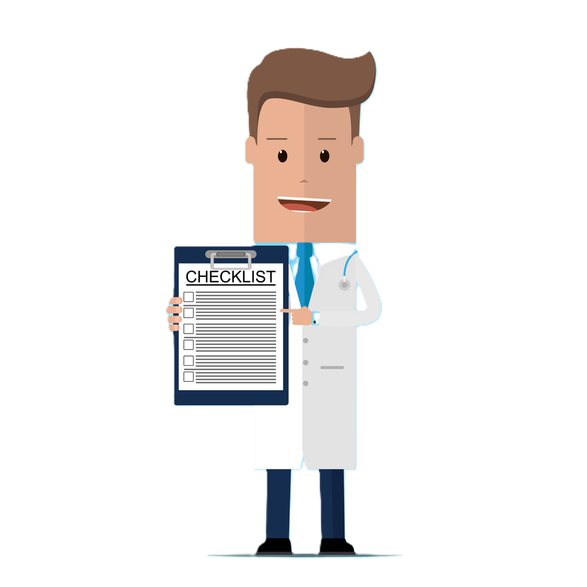

<div style="margin: 10px;">
    <div>
        <br>
        <div style="display: flex; gap: 10px">
            <h3>Ergonomia pracy, komunikacji i dokumentacji medycznej</h3>
            <div title="Demonstrator technologii algorytmu postępowania na podstawie analizy danych cyfrowych wcześniej leczonych
        pacjentów w zestawieniu z najnowszymi doniesieniami naukowymi">
                <mat-icon style="margin-top: 25px;">info</mat-icon>
            </div>
        </div>
        <br>

        <div *ngIf="widok == 1">
            <div class="grid-container">
                <div class="row">
                    <a (click)="setView(2)" class="top-articles-link" style="display: block;width: 100%; height:100%;">
                        <article class="column">Narzędzia do oceny warunków ergonomicznych miejsca pracy</article>
                    </a>
                    <a (click)="setView(3)" class="top-articles-link" style="display: block;width: 100%; height:100%;">
                        <article class="column">Raporty i zestawienia</article>
                    </a>
                    <a (click)="setView(4)" class="top-articles-link" style="display: block;width: 100%; height:100%;">
                        <article class="column">Zarządzanie zmianami warunków ergonomicznych (listy kontrolne)</article>
                    </a>
                </div>
            </div>
        </div>
        <div *ngIf="widok == 2">
            <button mat-raised-button color="primary" (click)="setView(1)">Wróć</button>
            <br>
            <h3> Wskaż obszar, którego będzie dotyczyło badanie warunków ergonomicznych miejsca pracy, następnie wybierz
                rodzaj formularza.</h3>

            <div style="display: flex; gap: 0px;">
                <div width="200px">
                    <mat-radio-group [(ngModel)]="radio1" color="primary" aria-label="Wybierz opcję">
                        <mat-radio-button value="1">Miejsce pracy</mat-radio-button>
                        <mat-radio-button value="2">Bezpieczna obsługa i przemieszczanie pacjentów</mat-radio-button>
                        <mat-radio-button value="3" disabled="true">Pozostałe</mat-radio-button>
                    </mat-radio-group>

                    <div style="margin-top: 40px;">
                        <div *ngIf="radio1==1">
                            <div><mat-checkbox color="primary"> Stanowiska pracy</mat-checkbox></div>
                            <div><mat-checkbox color="primary"> Środowisko fizyczne</mat-checkbox></div>
                            <div><mat-checkbox color="primary"> Kontrola zakażeń</mat-checkbox></div>
                            <br>
                            <div><mat-checkbox color="primary"> Przechowywanie i obsługa materiałów</mat-checkbox></div>
                            <div><mat-checkbox color="primary"> Bezpieczeństwo maszyn i narzędzi ręcznych</mat-checkbox>
                            </div>
                            <div><mat-checkbox color="primary"> Zaplecze socjalne</mat-checkbox></div>
                        </div>
                        <div *ngIf="radio1==2">
                            <div><mat-checkbox color="primary"> Bezpieczna obsługa pacjenta </mat-checkbox></div>
                            <div><mat-checkbox color="primary"> Organizacja pracy i bezpieczeństwo
                                    pacjentów</mat-checkbox></div>
                        </div>
                    </div>
                </div>
                <div>
                    
                </div>

            </div>


            <div class="buttons">
                <button mat-raised-button color="primary" (click)="setView(1)">Publikuj</button>
                @if (radio1 == 1) {
                    <button mat-raised-button color="primary" (click)="savePdf(1)">Edytuj</button>
                    <button mat-raised-button color="primary" (click)="printPdf(1)">Drukuj</button>
                }
                @else if(radio1 == 2){
                    <button mat-raised-button color="primary" (click)="savePdf(2)">Edytuj</button>
                    <button mat-raised-button color="primary" (click)="printPdf(2)">Drukuj</button>
                }
                <button mat-raised-button color="primary" (click)="setView(1)">Anuluj</button>

            </div>
        </div>

        <div *ngIf="widok == 3">
            <button mat-raised-button color="primary" (click)="setView(1)">Wróć</button>

            <br>
            <h3> Wskaż obszar objęty badaniem, dla którego chcesz obejrzeć wyniki i oceny.</h3>
            <div style="display: flex; gap: 0px;">
                <div width="200px">
                    <mat-radio-group [(ngModel)]="radio2" color="primary" aria-label="Wybierz opcję">
                        <mat-radio-button value="1">Miejsce pracy</mat-radio-button>
                        <mat-radio-button value="2">Bezpieczna obsługa i przemieszczanie pacjentów</mat-radio-button>
                        <mat-radio-button value="3" disabled="true">Pozostałe</mat-radio-button>
                    </mat-radio-group>

                    <div style="margin-top: 20px;">
                        <div *ngIf="radio2==1">
                            <cdk-virtual-scroll-viewport itemSize="50" class="example-viewport">
                                <h3 style="color: #365F91;"> Komputery i siedziska</h3>
                                <b> <span style="margin-left: 10px; margin-right: 20px;">1.</span> Obszar segregacji
                                    pacjentów (triażu) </b>
                                <BR>
                                <p>Problemy zidentyfikowane w obszarze segregacji pacjentów to:</p>
                                <p><span style="margin-left: 10px; margin-right: 10px;"><B>•</B></span> Przesunięcie
                                    monitora i klawiatury w stosunku do biurka</p>
                                <p><span style="margin-left: 10px; margin-right: 10px;"><B>•</B></span> Lokalizacja
                                    kosza na śmieci</p>
                                <p><span style="margin-left: 10px; margin-right: 10px;"><B>•</B></span> Niezręczne
                                    ustawienie krzesła pacjenta względem biurka</p>
                                <p><span style="margin-left: 10px; margin-right: 10px;"><B>•</B></span> Klawiatura i
                                    mysz są zbyt wysoko, co powoduje wyprost nadgarstka</p>

                                <b><span style="margin-left: 10px; margin-right: 20px;">2.</span> Komputer przenośny</b>
                                <p>Bieżące problemy:</p>
                                <p><span style="margin-left: 10px; margin-right: 10px;"><B>•</B></span> Odległość
                                    monitora i umiejscowienie klawiatury powodują zgięcie szyi</p>
                                <p><span style="margin-left: 10px; margin-right: 10px;"><B>•</B></span> Trzeba używać go
                                    stojąc</p>
                                <p><span style="margin-left: 10px; margin-right: 10px;"><B>•</B></span> Koła trudne do
                                    zablokowania i odblokowania</p>
                                <p><span style="margin-left: 30px; margin-right: 10px;"><B>◦</B></span> Powoduje to, że
                                    pielęgniarki używają jednej stopy do stabilizacji, a drugiej do stania (patrz
                                    następny slajd)</p>
                                <p><span style="margin-left: 10px; margin-right: 10px;"><B>•</B></span> Trudno
                                    dostosować wysokość</p>
                                <p><span style="margin-left: 30px; margin-right: 10px;"><B>◦</B></span> Wymaga
                                    przyłożenia siły 31,5 funta</p>

                                <b><span style="margin-left: 10px; margin-right: 20px;">3.</span> Pokój pracy
                                    pielęgniarki</b>
                                <p>Bieżące problemy</p>
                                <p><span style="margin-left: 10px; margin-right: 10px;"><B>•</B></span> Miejsce na
                                    biurku zmniejsza przestrzeń dostępną dla drukarki</p>
                                <p><span style="margin-left: 10px; margin-right: 10px;"><B>•</B></span> Drukarka pod
                                    biurkiem nie pozwala na miejsce na krzesło</p>
                                <p><span style="margin-left: 10px; margin-right: 10px;"><B>•</B></span> Taca nie pasuje
                                    do klawiatury</p>
                                <p><span style="margin-left: 10px; margin-right: 10px;"><B>•</B></span> Pozytywne
                                    nachylenie klawiatury prowadzi do kompresji nadgarstków</p>
                                <p><span style="margin-left: 10px; margin-right: 10px;"><B>•</B></span> Pochylona szyja
                                </p>

                                <b><span style="margin-left: 10px; margin-right: 20px;">4.</span> Siedzenie</b>
                                <p>Bieżące problemy</p>
                                <p><span style="margin-left: 10px; margin-right: 10px;"><B>•</B></span> Siedzisko trudne
                                    do regulacji – powinno dać się wyregulować w pozycji siedzącej</p>
                                <p><span style="margin-left: 10px; margin-right: 10px;"><B>•</B></span> Brak dostępnych
                                    podłokietników</p>
                                <p><span style="margin-left: 10px; margin-right: 10px;"><B>•</B></span> Miednica
                                    siedziska jest zbyt głęboka, co powoduje ucisk za kolanami i nie pozwala stopom
                                    równomiernie spoczywać na podłodze. To z kolei prowadzi do niewystarczającego
                                    podparcia lędźwiowego.</p>
                                <h3 style="color: #365F91;"> Oparcia</h3>
                                <p>Bieżące problemy – Deska ortopedyczna Pro-lite</p>
                                <p><span style="margin-left: 10px; margin-right: 10px;"><B>•</B></span> Waga 11,5 funta:
                                    Nieograniczony udźwig jednego pacjenta</p>
                                <p><span style="margin-left: 10px; margin-right: 10px;"><B>•</B></span> Długość 72 cale
                                    – wysokość o 2 cale dłuższa niż średnia dla dorosłych</p>
                                <p><span style="margin-left: 10px; margin-right: 10px;"><B>•</B></span> Szerokość 16
                                    cali: zwęża się od 16 do 14 cali w odcinku na stopy Szerokość jest o 2,3 cala
                                    krótsza niż średnia dla dorosłych</p>
                                <p><span style="margin-left: 10px; margin-right: 10px;"><B>•</B></span> Grubość 2-1/4
                                    cala</p>
                                <p><span style="margin-left: 10px; margin-right: 10px;"><B>•</B></span> Uchwyt konturowy
                                    zapewnia ratownikowi komfort we wszystkich 16 chwytach 2" x 5-1/4". Uchwyt nie
                                    zapewnia wystarczającego prześwitu, gdy osoba jest szersza niż 16”</p>
                                <p><span style="margin-left: 10px; margin-right: 10px;"><B>•</B></span> Jedna z
                                    droższych opcji</p>
                                <p><span style="margin-left: 10px; margin-right: 10px;"><B>•</B></span> Specyfikacje są
                                    standardowe</p>
                                <h3 style="color: #365F91;"> Schematy pracy Sala pogotowia</h3>
                                <p>Bieżące problemy</p>
                                <p><span style="margin-left: 10px; margin-right: 10px;"><B>•</B></span> Brak powierzchni
                                    roboczych na odpowiedniej wysokości</p>
                                <p><span style="margin-left: 10px; margin-right: 10px;"><B>•</B></span> Obszary o dużym
                                    natężeniu ruchu wykorzystywane jako powierzchnie magazynowe</p>
                                <p><span style="margin-left: 10px; margin-right: 10px;"><B>•</B></span> Brak miejsca do
                                    przechowywania</p>
                                <p><span style="margin-left: 10px; margin-right: 10px;"><B>•</B></span> Nieefektywne
                                    wykorzystanie przestrzeni</p>
                            </cdk-virtual-scroll-viewport>
                            <div style="display: flex; gap: 10px; margin-top: 10px;">
                                <button mat-raised-button color="primary" (click)="savePdf(3)">Zapisz do pliku</button>
                                <button mat-raised-button color="primary" (click)="printPdf(3)">Drukuj</button>
                            </div>
                        </div>
                        <div *ngIf="radio2==2">
                            <cdk-virtual-scroll-viewport itemSize="50" class="example-viewport">
                                <h3 style="color: #365F91;"> Wózki do transportu chorych składane na kółkach</h3>
                                <p>Bieżące problemy:</p>
                                <p><span style="margin-left: 10px; margin-right: 10px;"><B>•</B></span> Niezręczny
                                    uchwyt, gdy trzeba opuścić oparcie</p>
                                <p><span style="margin-left: 10px; margin-right: 10px;"><B>•</B></span> Duża siła
                                    potrzebna do manewrowania</p>
                                <p><span style="margin-left: 10px; margin-right: 10px;"><B>•</B></span> Około 40 funtów
                                    bez pacjenta</p>
                                <p><span style="margin-left: 10px; margin-right: 10px;"><B>•</B></span> Niezręczna
                                    równowaga przy blokowaniu kół</p>
                                <p><span style="margin-left: 10px; margin-right: 10px;"><B>•</B></span> Potrzebna duża
                                    siła, około 50 funtów z pacjentem</p>
                                <p><span style="margin-left: 10px; margin-right: 10px;"><B>•</B></span> Wymiary</p>
                                <p><span style="margin-left: 30px; margin-right: 10px;"><B>◦</B></span> Szerokość: 29”
                                </p>
                                <p><span style="margin-left: 30px; margin-right: 10px;"><B>◦</B></span> Długość: 70,5”
                                </p>
                                <p><span style="margin-left: 30px; margin-right: 10px;"><B>◦</B></span> Waga pacjenta do
                                    około 300 funtów</p>
                                <p> <span style="margin-left: 10px; margin-right: 10px;"><B>•</B></span> Według obliczeń
                                    REBA ryzyko jest wysokie i działania należy podjąć wkrótce</p>
                                <h3 style="color: #365F91;"> Kontrola zakażeń</h3>
                                <p> <span style="margin-left: 10px; margin-right: 10px;"><B>•</B></span> Częste infekcje
                                    podczas pracy w zakresie opieki</p>
                                <p> <span style="margin-left: 10px; margin-right: 10px;"><B>•</B></span> Niewygodne
                                    urządzenia do mycia i higieny rąk</p>
                                <p> <span style="margin-left: 10px; margin-right: 10px;"><B>•</B></span> Brak wyraźnego
                                    oznakowania miejsc do higieny rąk i przechowywania środków ochrony osobistej</p>
                                <h3 style="color: #365F91;"> Organizacja pracy i bezpieczeństwo pacjentów</h3>
                                <p style="margin-left: 10px;">Nieczytelny podział zadań, brak komunikacji między
                                    menedżerami i pracownikami</p>
                                <p style="margin-left: 10px;">Nadmierne godziny pracy</p>
                                <p style="margin-left: 10px;">Zbyt mało krótkich przerw</p>
                                <p style="margin-left: 10px;">Nadmierny stres</p>
                                <p style="margin-left: 10px;">Agresja ze strony pacjentów</p>
                                <p style="margin-left: 10px;">Blaty przy recepcji umiejscowione za wysoko dla osób z
                                    niepełnosprawnością na wózkach</p>
                                <p style="margin-left: 10px;">Brak czytelnego oznakowania gdzie są dostępne wózki dla
                                    osób z niepełnosprawnością</p>
                            </cdk-virtual-scroll-viewport>
                            <div style="display: flex; gap: 10px; margin-top: 10px;">
                                <button mat-raised-button color="primary" (click)="savePdf(4)">Zapisz do pliku</button>
                                <button mat-raised-button color="primary" (click)="printPdf(4)">Drukuj</button>
                            </div>
                        </div>

                    </div>
                </div>
                <div>
                    
                </div>
            </div>
        </div>

        <div *ngIf="widok == 4">
            <button mat-raised-button color="primary" (click)="setView(1)">Wróć</button>
            <br>
            <h3> Wskaż obszar objęty badaniem, dla którego chcesz wprowadzić ulepszenia w zakresie ergonomii pracy.</h3>

            <div style="display: flex; gap: 0px;">
                <div width="200px">
                    <mat-radio-group [(ngModel)]="radio3" color="primary" aria-label="Wybierz opcję">
                        <mat-radio-button value="1">Miejsce pracy</mat-radio-button>
                        <mat-radio-button value="2">Bezpieczna obsługa i przemieszczanie pacjentów</mat-radio-button>
                        <mat-radio-button value="3" disabled="true">Pozostałe</mat-radio-button>
                    </mat-radio-group>

                    <div *ngIf="radio3==1">
                        <h3 style="color: #365F91;"> Komputery i siedziska</h3>
                        <b> <span style="margin-left: 10px; margin-right: 20px;">1.</span> Obszar segregacji pacjentów
                            (triażu) </b>
                        <BR>
                        <p>Problemy zidentyfikowane w obszarze segregacji pacjentów to:</p>
                        <p><span style="margin-left: 10px; margin-right: 10px;"><B>•</B></span> Przesunięcie monitora i
                            klawiatury w stosunku do biurka</p>
                        <p><span style="margin-left: 10px; margin-right: 10px;"><B>•</B></span> Lokalizacja kosza na
                            śmieci
                        </p>
                        <p><span style="margin-left: 10px; margin-right: 10px;"><B>•</B></span> Niezręczne ustawienie
                            krzesła pacjenta względem biurka</p>
                        <p><span style="margin-left: 10px; margin-right: 10px;"><B>•</B></span> Klawiatura i mysz są
                            zbyt
                            wysoko, co powoduje wyprost nadgarstka</p>

                            <p>Wprowadź odpowiednie zalecenia:</p>
                            <div class="recommendation-container">
                                <div class="buttons">
                                    <button mat-raised-button color="primary" (click)="editRecommendations(1)">Edytuj</button>
                                    <button mat-raised-button color="primary" (click)="insertDefaultRecommendations(1)">Wstaw</button>
                                </div>
                                <!-- Pusta ramka na początku -->
                                <div *ngIf="!clicked[1]" class="example-viewport2">
                                    <div [innerHTML]="recommendations[1]"></div>
                                </div>

                                <!-- Pole edycyjne, pojawia się po kliknięciu "Edytuj" -->
                                <textarea
                                    *ngIf="clicked[1]"
                                    [(ngModel)]="recommendations[1]"
                                    maxlength="1000"
                                    class="example-viewport2"
                                    placeholder="Wprowadź swoje zalecenia tutaj...">
                                </textarea>

                            
                                <!-- Domyślny tekst pokazujący się po kliknięciu Wstaw -->
                                <div id="defaultText1" style="display: none;">
                                    <ul>
                                        <li>Oczy użytkownika 2”-3” poniżej górnej części obudowy monitora, skierowane prosto na klawiaturę i monitor</li>
                                        <li>Monitor umieszczony w przybliżeniu na wyciągnięcie ręki</li>
                                        <li>Odchylana taca na klawiaturę i mysz</li>
                                        <li>Stojak na komputer umieszczony 28”-30” nad podłogą powinien zastąpić biurko</li>
                                        <li>Oddzielny stojak na telefon i dokumenty, z możliwością obracania</li>
                                        <li>Ustawienie stojaka 90° od aktualnej pozycji biurka tak, aby być twarzą do pacjenta</li>
                                        <li>Używanie tabletu lub laptopa, aby zminimalizować zajmowane miejsce</li>
                                    </ul>
                                </div>
                            </div>
                            

                        <b><span style="margin-left: 10px; margin-right: 20px;">2.</span> Komputer przenośny</b>
                        <p>Bieżące problemy:
                        <p><span style="margin-left: 10px; margin-right: 10px;"><B>•</B></span> Odległość monitora i
                            umiejscowienie klawiatury powodują zgięcie szyi</p>
                        <p><span style="margin-left: 10px; margin-right: 10px;"><B>•</B></span> Trzeba używać go stojąc
                        </p>
                        <p><span style="margin-left: 10px; margin-right: 10px;"><B>•</B></span> Koła trudne do
                            zablokowania i odblokowania</p>
                        <p><span style="margin-left: 10px; margin-right: 10px;"><B>•</B></span> Powoduje to, że
                            pielęgniarki używają jednej stopy do stabilizacji, a drugiej do stania (patrz następny
                            slajd)</p>
                        <p><span style="margin-left: 10px; margin-right: 10px;"><B>•</B></span> Trudno dostosować
                            wysokość</p>
                        <p><span style="margin-left: 10px; margin-right: 10px;"><B>•</B></span>Wymaga przyłożenia siły
                            31,5 funta</p>
                        <p>Wprowadź odpowiednie zalecenia:</p>

                        <div class="recommendation-container">
                            <div class="buttons">
                                <button mat-raised-button color="primary" (click)="editRecommendations(2)">Edytuj</button>
                                <button mat-raised-button color="primary" (click)="insertDefaultRecommendations(2)">Wstaw</button>
                            </div>
                            <!-- Pusta ramka na początku -->
                            <div *ngIf="!clicked[2]" class="example-viewport2">
                                <div [innerHTML]="recommendations[2]"></div>
                            </div>

                            <!-- Pole edycyjne, pojawia się po kliknięciu "Edytuj" -->
                            <textarea
                                *ngIf="clicked[2]"
                                [(ngModel)]="recommendations[2]"
                                maxlength="1000"
                                class="example-viewport2"
                                placeholder="Wprowadź swoje zalecenia tutaj...">
                            </textarea>

                        
                            <!-- Domyślny tekst pokazujący się po kliknięciu Wstaw -->
                            <div id="defaultText2" style="display: none;">
                                <p>Przy istniejącym stanowisku komputerowym:</p>
                                <ul>
                                    <li>Sugerowany kurs pisania na klawiaturze</li>
                                    <li>Umieszczenie na stałe w pomieszczeniach do badania pacjentów, aby koła mogły być zablokowane na stałe</li>
                                </ul>
                                <p>Inne opcje</p>
                                <ul>
                                    <li>
                                        <p>Inny rodzaj stojaka z</p>
                                        <ul>
                                            <li>Blokowaniem kół</li>
                                            <li>Regulowaną wysokością</li>
                                            <li>Przestrzenią na nogi, aby użytkownik mógł wygodnie usiąść</li>
                                        </ul>
                                    </li>
                                    <li>Możliwość przenoszenia laptopa, tabletu PC, PDA; używanie ich z biurkami/stojakami umieszczonymi na stałe</li>
                                </ul>
                            </div>
                        </div>

                        <b><span style="margin-left: 10px; margin-right: 20px;">3.</span> Pokój pracy pielęgniarki</b>
                        <p>Bieżące problemy:</p>
                        <p><span style="margin-left: 10px; margin-right: 10px;"><B>•</B></span> Miejsce na biurku
                            zmniejsza przestrzeń dostępną dla drukarki</p>
                        <p><span style="margin-left: 10px; margin-right: 10px;"><B>•</B></span> Drukarka pod biurkiem
                            nie pozwala na miejsce na krzesło</p>
                        <p><span style="margin-left: 10px; margin-right: 10px;"><B>•</B></span> Taca nie pasuje do
                            klawiatury</p>
                        <p><span style="margin-left: 10px; margin-right: 10px;"><B>•</B></span> Pozytywne nachylenie
                            klawiatury prowadzi do kompresji nadgarstków</p>
                        <p><span style="margin-left: 10px; margin-right: 10px;"><B>•</B></span> Pochylona szyja</p>
                        <p>Wprowadź odpowiednie zalecenia:</p>

                        <div class="recommendation-container">
                            <div class="buttons">
                                <button mat-raised-button color="primary" (click)="editRecommendations(3)">Edytuj</button>
                                <button mat-raised-button color="primary" (click)="insertDefaultRecommendations(3)">Wstaw</button>
                            </div>
                            <!-- Pusta ramka na początku -->
                            <div *ngIf="!clicked[3]" class="example-viewport2">
                                <div [innerHTML]="recommendations[3]"></div>
                            </div>

                            <!-- Pole edycyjne, pojawia się po kliknięciu "Edytuj" -->
                            <textarea
                                *ngIf="clicked[3]"
                                [(ngModel)]="recommendations[3]"
                                maxlength="1000"
                                class="example-viewport2"
                                placeholder="Wprowadź swoje zalecenia tutaj...">
                            </textarea>

                        
                            <!-- Domyślny tekst pokazujący się po kliknięciu Wstaw -->
                            <div id="defaultText3" style="display: none;">
                                <ul>
                                    <li>Stworzenie pielęgniarkom możliwości siedzenia, aby zapewnić krótki odpoczynek</li>
                                    <li>Ustawienie monitora bezpośrednio przed siedzącym pracownikiem w odległości ramienia</li>
                                    <li>Usunięcie drewnianej konstrukcji, aby umożliwić przeniesienie drukarki i komputera stacjonarnego na lewą stronę monitora</li>
                                    <li>Zainstalowanie nowej klawiatury i tacy na mysz z negatywnym pochylaniem, które pomogą zapobiegać zespołowi cieśni nadgarstka</li>
                                    <li>Zapewnienie siedzenia zgodnie z poniższymi slajdami, poprzez usunięcie drukarki</li>
                                </ul>
                            </div>
                        </div>

                        <b><span style="margin-left: 10px; margin-right: 20px;">4.</span> Siedzenie</b>
                        <p>Bieżące problemy</p>
                        <p><span style="margin-left: 10px; margin-right: 10px;"><B>•</B></span> Siedzisko trudne do
                            regulacji – powinno dać się wyregulować w pozycji siedzącej</p>
                        <p><span style="margin-left: 10px; margin-right: 10px;"><B>•</B></span> Brak dostępnych
                            podłokietników</p>
                        <p><span style="margin-left: 10px; margin-right: 10px;"><B>•</B></span> Miednica siedziska jest
                            zbyt głęboka, co powoduje ucisk za kolanami i nie pozwala stopom równomiernie spoczywać na
                            podłodze. To z kolei prowadzi do niewystarczającego podparcia lędźwiowego.</p>

                        <p>Wprowadź odpowiednie zalecenia:</p>

                        <div class="recommendation-container">
                            <div class="buttons">
                                <button mat-raised-button color="primary" (click)="editRecommendations(4)">Edytuj</button>
                                <button mat-raised-button color="primary" (click)="insertDefaultRecommendations(4)">Wstaw</button>
                            </div>
                            <!-- Pusta ramka na początku -->
                            <div *ngIf="!clicked[4]" class="example-viewport2">
                                <div [innerHTML]="recommendations[4]"></div>
                            </div>

                            <!-- Pole edycyjne, pojawia się po kliknięciu "Edytuj" -->
                            <textarea
                                *ngIf="clicked[4]"
                                [(ngModel)]="recommendations[4]"
                                maxlength="1000"
                                class="example-viewport2"
                                placeholder="Wprowadź swoje zalecenia tutaj...">
                            </textarea>

                        
                            <!-- Domyślny tekst pokazujący się po kliknięciu Wstaw -->
                            <div id="defaultText4" style="display: none;">
                                <ul>
                                    <li>Wymiary krzeseł powinny umożliwić korzystanie z nich jak najszerszemu kręgowi pracowników, spełniając poniższe kryteria:
                                        <ul>
                                            <li>Szerokość miednicy siedziska: 18,3 "plus 1" na odzież z każdej strony</li>
                                            <li>Szerokość oparcia: 20,6”</li>
                                            <li>Głębokość miednicy siedziska: 16”</li>
                                            <li>Wysokość krzesła: 14,5”-19”</li>
                                        </ul>
                                    </li>
                                    <li>Wysokość krzesła powinna być łatwo regulowana, gdy użytkownik siedzi na nim. Użytkownik powinien mieć możliwość stabilnego postawienia stóp na ziemi, a nogi powinny być ustawione równolegle do podłoża</li>
                                    <li>Komfortowe wyścielenie miednicy siedziska na i odpowiednie podparcie odcinka lędźwiowego</li>
                                    <li>Oparcie powinno być odchylone, aby kąt między górną a dolną częścią ciała wynosił 110°</li>
                                </ul>
                            </div>
                        </div>

                        <h3 style="color: #365F91;">Schematy pracy Sala pogotowia</h3>
                        <p>Aktualne problemy</p>
                        <p><span style="margin-left: 10px; margin-right: 10px;"><B>•</B></span> Brak powierzchni
                            roboczych na odpowiedniej wysokości</p>
                        <p><span style="margin-left: 10px; margin-right: 10px;"><B>•</B></span> Obszary o dużym
                            natężeniu ruchu wykorzystywane jako powierzchnie magazynowe</p>
                        <p><span style="margin-left: 10px; margin-right: 10px;"><B>•</B></span> Brak miejsca do
                            przechowywania</p>
                        <p><span style="margin-left: 10px; margin-right: 10px;"><B>•</B></span> Nieefektywne
                            wykorzystanie przestrzeni</p>

                        <p>Wprowadź odpowiednie zalecenia:</p>

                        <div class="recommendation-container">
                            <div class="buttons">
                                <button mat-raised-button color="primary" (click)="editRecommendations(5)">Edytuj</button>
                                <button mat-raised-button color="primary" (click)="insertDefaultRecommendations(5)">Wstaw</button>
                            </div>
                            <!-- Pusta ramka na początku -->
                            <div *ngIf="!clicked[5]" class="example-viewport2">
                                <div [innerHTML]="recommendations[5]"></div>
                            </div>

                            <!-- Pole edycyjne, pojawia się po kliknięciu "Edytuj" -->
                            <textarea
                                *ngIf="clicked[5]"
                                [(ngModel)]="recommendations[5]"
                                maxlength="1000"
                                class="example-viewport2"
                                placeholder="Wprowadź swoje zalecenia tutaj...">
                            </textarea>

                        
                            <!-- Domyślny tekst pokazujący się po kliknięciu Wstaw -->
                            <div id="defaultText5" style="display: none;">
                                <ul>
                                    <li>Układ promieniowy - Wszystko jest centralnie zlokalizowane
                                        <ul>
                                            <li>Minimalny ruch ze względu na centralną bliskość obszarów pacjentów i obszarów roboczych z wizualnym dostępem do wszystkich pomieszczeń</li>
                                            <li>Obszar główny zawiera: stanowisko pielęgniarek, karty pacjentów, laboratorium, stanowisko na formalności, zaopatrzenie</li>
                                            <li>Zwiększa efektywność wykorzystania przestrzeni i przepływu ruchu</li>
                                            <li>Zwiększone powierzchnie robocze na dwóch wysokościach, które mogą służyć osobom w pozycji stojącej i siedzącej</li>
                                        </ul>
                                    </li>
                                    <li>Maty przeciwzmęczeniowe
                                        <ul>
                                            <li>Zmniejszają zmęczenie i dyskomfort nóg i pleców</li>
                                            <li>Zwiększają przepływ krwi i ilości tlenu docierającego do serca</li>
                                            <li>Pozwalają na częste zmiany i zmienność orientacji ciała</li>
                                            <li>Odporna na plamy powierzchnia z polipropylenu ułatwia konserwację</li>
                                        </ul>
                                    </li>
      
                                </ul>
                            </div>
                        </div>
                    </div>

                    <div *ngIf="radio3==2">
                        <h3 style="color: #365F91;"> Wózki do transportu chorych składane na kółkach </h3>
                        <p>Bieżące problemy:</p>
                        <p><span style="margin-left: 10px; margin-right: 10px;"><B>•</B></span> Niezręczny uchwyt, gdy
                            trzeba opuścić oparcie</p>
                        <p><span style="margin-left: 10px; margin-right: 10px;"><B>•</B></span> Duża siła potrzebna do
                            manewrowania</p>
                        <p><span style="margin-left: 10px; margin-right: 10px;"><B>•</B></span> Około 40 funtów bez
                            pacjenta</p>
                        <p><span style="margin-left: 10px; margin-right: 10px;"><B>•</B></span> Niezręczna równowaga
                            przy blokowaniu kół</p>
                        <p><span style="margin-left: 10px; margin-right: 10px;"><B>•</B></span> Potrzebna duża siła,
                            około 50 funtów z pacjentem</p>
                        <p><span style="margin-left: 10px; margin-right: 10px;"><B>•</B></span> Wymiary</p>
                        <p><span style="margin-left: 30px; margin-right: 10px;"><B>◦</B></span> Szerokość: 29”</p>
                        <p><span style="margin-left: 30px; margin-right: 10px;"><B>◦</B></span> Długość: 70,5”</p>
                        <p><span style="margin-left: 30px; margin-right: 10px;"><B>◦</B></span> Waga pacjenta do około
                            300 funtów</p>
                        <p><span style="margin-left: 10px; margin-right: 10px;"><B>•</B></span> Według obliczeń REBA
                            ryzyko jest wysokie i działania należy podjąć wkrótce</p>

                        <p>Wprowadź odpowiednie zalecenia:</p>

                        <div class="recommendation-container">
                            <div class="buttons">
                                <button mat-raised-button color="primary" (click)="editRecommendations(6)">Edytuj</button>
                                <button mat-raised-button color="primary" (click)="insertDefaultRecommendations(6)">Wstaw</button>
                            </div>
                            <!-- Pusta ramka na początku -->
                            <div *ngIf="!clicked[6]" class="example-viewport2">
                                <div [innerHTML]="recommendations[6]"></div>
                            </div>

                            <!-- Pole edycyjne, pojawia się po kliknięciu "Edytuj" -->
                            <textarea
                                *ngIf="clicked[6]"
                                [(ngModel)]="recommendations[6]"
                                maxlength="1000"
                                class="example-viewport2"
                                placeholder="Wprowadź swoje zalecenia tutaj...">
                            </textarea>

                        
                            <!-- Domyślny tekst pokazujący się po kliknięciu Wstaw -->
                            <div id="defaultText6" style="display: none;">
                                <ul>
                                    <li>Manewrowość
                                        <ul>
                                            <li>Hydrauliczny podnośnik mechaniczny: do podnoszenia i opuszczania, także do oparcia</li>
                                            <li>Lepsze uchwyty</li>
                                            <li>echanizm ręczny do blokowania kół</li>
                                        </ul>
                                    </li>
                                    <li>Sugerowane wymiary
                                        <ul>
                                            <li>Szerokość: 37”</li>
                                            <li>Długość: 70”-80”</li>
                                            <li>Waga pacjenta do 1000 funtów</li>
                                        </ul>
                                    </li>
      
                                </ul>
                            </div>
                        </div>


                        <h3 style="color: #365F91;">Kontrola zakażeń</h3>
                        <p>Bieżące problemy:</p>
                        <p><span style="margin-left: 10px; margin-right: 10px;"><B>•</B></span> Częste infekcje podczas
                            pracy w
                            zakresie opieki</p>
                        <p><span style="margin-left: 10px; margin-right: 10px;"><B>•</B></span> Niewygodne urządzenia do
                            mycia i
                            higieny rąk</p>
                        <p><span style="margin-left: 10px; margin-right: 10px;"><B>•</B></span> Brak wyraźnego
                            oznakowania miejsc do
                            higieny rąk i przechowywania środków ochrony osobistej</p>
                        <p>Wprowadź odpowiednie zalecenia:</p>

                        <div class="recommendation-container">
                            <div class="buttons">
                                <button mat-raised-button color="primary" (click)="editRecommendations(7)">Edytuj</button>
                                <button mat-raised-button color="primary" (click)="insertDefaultRecommendations(7)">Wstaw</button>
                            </div>
                            <!-- Pusta ramka na początku -->
                            <div *ngIf="!clicked[7]" class="example-viewport2">
                                <div [innerHTML]="recommendations[7]"></div>
                            </div>

                            <!-- Pole edycyjne, pojawia się po kliknięciu "Edytuj" -->
                            <textarea
                                *ngIf="clicked[7]"
                                [(ngModel)]="recommendations[7]"
                                maxlength="1000"
                                class="example-viewport2"
                                placeholder="Wprowadź swoje zalecenia tutaj...">
                            </textarea>

                        
                            <!-- Domyślny tekst pokazujący się po kliknięciu Wstaw -->
                            <div id="defaultText7" style="display: none;">
                                <ul>
                                    <li>stanowić procedury zapewnienia higieny rąk i higieniczne urządzenia do ich mycia.</li>
                                    <li>Promować środki kontroli zakażeń, aby wyeliminować lub zmniejszyć ryzyko infekcji podczas pracy w zakresie opieki.</li>
                                    <li>Zapewnić odpowiednie programy szczepień dla pracowników opieki o wyższym ryzyku zakażenia w pracy.</li>
                                    <li>Dokonać wyboru i używać środków ochrony osobistej, które są odpowiednie do ochrony przed potencjalnymi zakażeniami.</li>
                                    <li>Ustanowić procedury ochrony osób objętych opieką i pracowników opieki przed osobami zakażonymi.</li>
                                    <li>Ustanowić i stosować plany awaryjne kontroli zakażeń, w tym plan ciągłości działania (ang. BCP, business continuity plan).</li>
                                </ul>
                            </div>
                        </div>

                        <h3 style="color: #365F91;">Organizacja pracy i bezpieczeństwo pacjentów</h3>
                        <p>Bieżące problemy:</p>
                        <p><span style="margin-left: 10px; margin-right: 10px;"><B>•</B></span> Nieczytelny podział
                            zadań, brak komunikacji między menedżerami i pracownikami</p>
                        <p><span style="margin-left: 10px; margin-right: 10px;"><B>•</B></span> Nadmierne godziny pracy
                        </p>
                        <p><span style="margin-left: 10px; margin-right: 10px;"><B>•</B></span> Zbyt mało krótkich
                            przerw</p>
                        <p><span style="margin-left: 10px; margin-right: 10px;"><B>•</B></span> Nadmierny stres</p>
                        <p><span style="margin-left: 10px; margin-right: 10px;"><B>•</B></span> Agresja ze strony
                            pacjentów</p>
                        <p><span style="margin-left: 10px; margin-right: 10px;"><B>•</B></span> Blaty przy recepcji
                            umiejscowione za wysoko dla osób z niepełnosprawnością na wózkach</p>
                        <p><span style="margin-left: 10px; margin-right: 10px;"><B>•</B></span> Brak czytelnego
                            oznakowania gdzie są dostępne wózki dla osób z niepełnosprawnością</p>
                        <p>Wprowadź odpowiednie zalecenia:</p>

                        <div class="recommendation-container">
                            <div class="buttons">
                                <button mat-raised-button color="primary" (click)="editRecommendations(8)">Edytuj</button>
                                <button mat-raised-button color="primary" (click)="insertDefaultRecommendations(8)">Wstaw</button>
                            </div>
                            <!-- Pusta ramka na początku -->
                            <div *ngIf="!clicked[8]" class="example-viewport2">
                                <div [innerHTML]="recommendations[8]"></div>
                            </div>

                            <!-- Pole edycyjne, pojawia się po kliknięciu "Edytuj" -->
                            <textarea
                                *ngIf="clicked[8]"
                                [(ngModel)]="recommendations[8]"
                                maxlength="1000"
                                class="example-viewport2"
                                placeholder="Wprowadź swoje zalecenia tutaj...">
                            </textarea>

                        
                            <!-- Domyślny tekst pokazujący się po kliknięciu Wstaw -->
                            <div id="defaultText8" style="display: none;">
                                <ul>
                                    <li>Przeprowadzać krótkie spotkanie przed pracą, aby wspólnie zaplanować zadania i promować komunikację i klimat wzajemnego wspierania się wśród menedżerów i pracowników</li>
                                    <li>Ustalić harmonogramy pracy, aby uniknąć nadmiernych godzin pracy i zapewnić wystarczającą ilość okresów odpoczynku i krótkich przerw</li>
                                    <li>Dostosować obiekty, sprzęt i metody pracy do osób niepełnosprawnych, aby mogły one bezpiecznie i wydajnie wykonywać swoją pracę</li>
                                    <li>Zaplanować i wdrożyć praktyczne środki zapobiegania stresowi w pracy poprzez współpracę menedżerów i pracowników oraz zorganizować szkolenia z tych środków</li>
                                    <li>Promować bezpieczniejsze usługi opieki zdrowotnej i kulturę bezpieczeństwa pacjentów obejmującą personel, kierownictwo i pacjentów</li>
                                    <li>Wdrażać partycypacyjne doskonalenie miejsca pracy poprzez uczenie się się na przykładzie dobrych praktyk możliwych do stosowania w lokalnych warunkach.</li>
                                </ul>
                            </div>
                        </div>
                    </div>
                </div>

                <div>
                    
                </div>
            </div>
        </div>
        <br>
        <br>
        <br>
        <br>
        <br>
    </div>
</div>